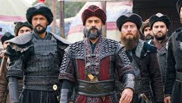

⚜Kuruluş Osman
⨷ Osman (Burak Özçivit;[5] starring seasons 1–2)
is the third
and youngest son of Ertuğrul Gazi and Halime Sultan.
He is also the younger brother of Gündüz Bey and Savcı Bey,
and nephew of Selcan Hatun, who he treats as a mother.
He is the husband of Bala Hatun and Malhun Hatun and father of Orhan.
He aspires to follow in the footsteps of his father Ertuğrul and
his grandfather Süleyman Şah. He is extremely attentive to his
surroundings and good with a sword, just like his father.
He disobeys his beys sometimes, similar to Ertuğrul,
traveling on the path he believes is successful. His weakness is
his care for his close ones, making him prone to traps.
He humiliates his enemies both on the battlefield and while
negotiating, leaving them with a thirst for revenge. He is elected
as the Bey of the Kayı tribe in season 2. He decides to marry
a second wife as per his father's will, as well as changing the
Kayı flag. Based on Osman I.
⨀≫ Osman I
Osman I or Osman Ghazi (Ottoman Turkish: عثمان غازى‎, romanized: ʿOsmān ā āzī; Turkish: I. Osman or Osman Gazi; died 1323/4),[1][3] sometimes transliterated archaically as Othman, was the leader
of the Kayi tribe and the founder of the Ottoman dynasty. The dynasty bearing his name later established and ruled the Ottoman Empire (first known as the Ottoman Beylik or Emirate). This state, while initially a small Turkmen[6]
principality during Osman's lifetime, transformed into a world empire in the centuries after his death.[7] It existed until shortly after the end of World War I.
Owing to the scarcity of historical sources dating from his lifetime,
very little factual information about Osman has survived. Not a single written source survives from Osman's reign,[8] and the Ottomans did not record the history of Osman's life until the fifteenth century, more than a hundred years after his death.[9] Because of this,
historians find it very challenging to differentiate between fact and myth in the many stories told about him.[10] One historian has even gone so far as to declare it impossible, describing the period of Osman's life as a "black hole".[11]
According to later Ottoman tradition, Osman's ancestors were descendants of the Kayı tribe of Oghuz Turks.[12] However, many scholars of the early Ottomans regard it as a later fabrication meant to reinforce dynastic legitimacy.[12]
The Ottoman principality was one of many Anatolian beyliks that emerged in the second half of the thirteenth century. Situated in the region of Bithynia in the north of Asia Minor, Osman's principality found itself particularly well placed to launch
attacks on the vulnerable Byzantine Empire, which his descendants would eventually go on to conquer.
✡ ⨠Bala Hatun

⨷ Bala (Özge Törer;[6][7] starring seasons 1–2)
is the daughter
of Şeyh Edebali and Ulduz Hatun, who died because of a disease,
and the first wife of Osman Bey. Stepmother of Orhan. She is a
good painter who is loyal to her father, her husband,
the Ahi brotherhood, and Selcan Hatun. She is best friends
with Gonca Hatun. She is calm and patient but is prone to
heartbreak. A Mongol stabbed her in season 1 and she therefore
cannot produce a baby and is constantly teased due to this fact.
In season 2, after her husband is elected Bey, she becomes the
Hanım (Head Hatun) of the Kayı tribe, succeeding Selcan Hatun.
She is upset when Osman decides to marry a second wife, due to
his late father's will, although she accepts her fate. She even
attempts to be the person to find him a wife, which leads to her
meeting the kind and loving Aksu Hatun, who Osman rejects
marrying because she isn't the daughter of a Bey. Aksu is later killed by Targun Hatun, who loved Osman but then sought revenge on him after he exiled her when she poisoned Bala, who she saw as an obstacle between her marriage to Osman. After she kills Targun, she has tensions with Malhun Hatun, who later becomes the 2nd wife of Osman Bey, although Bala accepts her. Bala later becomes pregnant herself. Özge Törer won the Best Actress of the Year award at the Crystal Globe Awards for her
performance as the character.[8][9] Based on Rabia Bala Hatun.
⨠Süleyman Şah
Süleyman Şah (fictional character)
Süleyman Şah, is one of the main characters in the first season of Turkish TV series, Diriliş: Ertuğrul ,
portrayed by Serdar Gökhan. He later appears as a guest character in later seasons, as well as in its sequel, Kuruluş: Osman Kuruluş: Osman, where he is played by the same actor. The character is
based on Suleyman Shah, the possible grandfather of Osman I.[1]
⨷▶ Background
Süleyman Şah was raised by his father Kaya Alp,
along with his adoptive brothers Kurdoğlu and Alptekin.
He inherited the Kayı Beylik upon his father's death,
and fought in many wars alongside Kurdoğlu, and became
blood brothers with him. He also married and had his
first son Gündoğdu, before his first wife and two sons
were killed by Mongols. Süleyman Şah eventually fell in
love with Hayme Hatun, sister of Korkut Bey, of the Dodurga
tribe, and married her. He was also forced to kill his
adoptive brother Alptekin, after he started a rebellion
and attempted to seize the Kayı Beylik, whilst he adopted
Alptekin's daughters Selcan and Gökçe, as well
as raising his son Ertuğrul's alps, Turgut,
Bamsı and Doğan. His son Sungurtekin was also
captured in a Mongol ambush at a relatively
young age, and Süleyman did not get
a chance to reunite with his son before his death.
◈► Storyline
Season 1
See also: Diriliş: Ertuğrul (season 1)
In the first season, Süleyman Şah is depicted as the long-serving Bey of the Kayı tribe, struggling to combat the tribe's poverty and dealing with the ambition of his blood brother Kurdoğlu and son Gündoğdu. Due to these issues, he sends his son, Ertuğrul, to ask for land from the Emir of Aleppo. This is made almost impossible when the Kayı are put in a series of problems with the Templars after Ertuğrul saves Şehzade Numan, Halime Sultan, and Şehzade Yiğit, with Süleyman Şah's tribe being persecuted and Ertuğrul being imprisoned by the manipulated Emir, although Ertuğrul later shows him the truth. A problem also arises with Kurdoğlu, after he seeks his blood brother's Beylik with the help of the Templars and Süleyman's daughter-in-law Selcan Hatun, who wants revenge from Süleyman Şah as he killed her treacherous father, Alptekin Bey. Selcan's husband Gündoğdu also becomes jealous of his brother Ertuğrul as he is respected as the tribe hero but gradually calms down,
and helps his father Süleyman Şah defeat Kurdoğlu's tricks
and secures his father's Beylik. After Kurdoğlu briefly
overthrows Süleyman and attempts to murder him, he is captured and beheaded by Ertuğrul, who later successfully defeats the Templars and captures their castle on his father's orders, and Selcan repents. This is followed by Süleyman Şah's death and the tribe's migration to Erzurum as part of Süleyman Şah's will before he died, whilst Süleyman nominates Ertuğrul as the tribe's Alpbaşı (transl. Chief Alp) in his will.
Season 2–5 and Kuruluş: Osman
See also: Diriliş: Ertuğrul (season 2), Diriliş: Ertuğrul
(season 5), and Kuruluş: Osman
Süleyman Şah has a moderate influence on the plot of the second
season, despite having passed away. The nomination of Korkut Bey's son Tuğtekin as Chief Alp overrides his will for Ertuğrul to take that position, angering Ertuğrul. He later appears in Ertuğrul's dreams during his visit to Bithynia, foretelling the greatness of Ertuğrul's future son Osman. He also appears in Ertuğrul's dreams as his first posthumous grandson Gündüz is born, giving him advice on fatherhood, whilst he appears in his widow Hayme's dreams, first assuring her whilst she is wounded, and later telling her to migrate with Ertuğrul to the west. Sungurtekin, having returned to the tribe, also expresses regret over not being able to reunite with his father, whilst Deli Demir and Hayme also express regret over no longer being under his rule. Eventually, Ertuğrul names his sons 'Gündüz', 'Savcı' and 'Osman' as per Süleyman Şah's will, whilst Gündoğdu and Selcan name their son
'Süleyman' in memory of him. In the fifth season, Süleyman Şah appears in his grandson Osman's dreams, giving him advice in Ertuğrul's marquee. In the sequel series Kuruluş: Osman, Süleyman's son Dündar is shown to be residing in his father's marquee, whilst Süleyman Şah again appears in Osman's dreams, telling him to 'wake up' to his surroundings. Eventually, Süleyman's sons Ertuğrul and Dündar inherit the boil disease that he died from, whilst Ertuğrul also passes away due to this disease.
◠Dündar Bey
Dündar Bey was the youngest son of the Kayı Bey Suleyman Shah or
Gündüz Alp and the younger brother of Ertuğrul (13th century).
He was the uncle of Osman I, the founder of
Ottoman Empire.[1][2]
⇰ Biography
At the time of the division of the Kayı tribe , Dündar Bey migrated with his brother Ertuğrul after the death of their father.[2][3]
When Ertuğrul died c. 1280, leadership/chief beyship[clarification needed] of the Kayı tribe transferred over to Ertuğrul's son, Osman I.
When Osman I decided to attack a small Greek island, Dündar set a trap for him; Dündar rebelled because he thought such an attack would destroy the tribe.
Dündar also believed he could take Osman I's throne, which did not work out. The circumstances surrounding his death are, like many other details of his ill-documented life, disputed.[4]
Historical sources disagree on whether or not he was executed by Osman I.[1]
Division of the tribe
There isn't much information about the older brothers of Ertuğrul , however, one of the things that
they are known for is that they migrated to Ahlat rather than Söğüt,
which was where Ertuğrul migrated from Sivas. Most of the tribe wanted to migrate to Central Asia, their homeland, and therefore, 1000 people migrated to Central Asia with
the older brothers, and 400 people migrated with the younger brothers.[1] According to sources, Hayme Hatun was with Ertuğrul in this migration.[3] The reason why Ertuğrul
and Dündar decided to migrate to Söğüt was either that they wanted to escape the Mongol onslaught,[1] what the Turkmen tribes had been doing for decades,
or that they wanted to populate the area gifted to Ertuğrul by Keykubad I with Oghuz Turks.
✔◉ Bamsi Beyrek
Bamsi Beyrek Azerbaijani:( Bamsı Beyrək, South Azerbaijani: بامسی بئیرک, Turkish: Bamsı Beyrek) is a character in the Book of Dede Korkut and in Turkish, Azeri and some Altai legends and fairy tales . Despite his stories being far-stretched, it is believed that he may have indeed been a real person. Beyrek's character has also been adapted in the Turkish TV series, Diriliş: Ertuğrul, and its sequel, Kuruluş: Osman, by the same actor in both series, Nurettin Sönmez.[1] Burak Aksak also named one of his films "Bamsı Beyrek" about a love experienced in Oghuz Turks. [2] The film is centered around Legend II of the Book of Dede Korkut, the dastan is mainly about Bamsi. In Bamsı Beyrek, he is portrayed by Uraz Kaygılaroğlu.[3]
◈► Storyline
Birth and "how he got his name"
Legend II (Bamsi Beyrek, Son of Bay Büre Bey [tr] or Bamsi Beyrek of the Grey Horse according to translator Geoffrey Lewis[5]) is centered around Beyrek. In the legend, it says that once the Oghuz princes all gathered up somewhere. The father of Beyrek, Bay Büre, wept when he saw everyone had a son besides him. The princes asked why he was crying, he replied that it was because he doesn't have a son to carry on his family. The princes all started to pray that Bay Büre would get a son. Bay Bichen [az][a 1] also prayed that he would get a daughter that he would marry to Bay Büre's son.
And they sooner or later got the children they wanted.
Mention of Beyrek's name in the second legend of the Book of Korkut Ata
Bamsi got his name after Bay Büre sent his merchants to bring some presents. As time went by, the merchants arrived in Constantinople and bought some items, however, on their way back to Bay Büre, they were attacked by some infidels. The son of Bay Büre himself came and helped the merchants by killing all the infidels who attacked them. The son of Bay Büre didn't have any name as an Oghuz Turk was given his name when he beheaded an infidel. So the son of Bay Büre decided to receive these presents from his father instead of introducing himself. When the merchants came back to Bay Büre,
they started kissing the young man's hand, the young man had already arrived and didn't tell his father about anything. The merchants then came to know that the young man was the son of their great Khan, Bay Büre Khan. They also told Bay Büre about what had happened in the infidels' attack, and the young man's father found out that his son had cut off the heads of his enemies. Then the young man was given the name of Bamsi Beyrek in a gathering of the Oghuz princes.
◉▶◈ marriage
Further information: Yaltajuk, the son of Yalanji
After he got his name, Bamsi Beyrek met with the daughter of Bay Bichen, her name was Banu Chichek. After Beyrek gave a deer to Banu's nurse, they spent some time together after which both of them came to know more about each other, they even have a disagreement in which both had an arm wrestle.[6] Bamsi Beyrek also gave her a golden ring as a sign of their engagement. When Bamsı Beyrek went back to his father, his father was already aware of his desire. And after passing a lot of resistances, including having to face Yaltajuk, Banu's evil lover who convinced everyone that Bamsi was dead, Bamsi Beyrek happily got his love, Banu Chichek, and married her.
Korkut appeared as a character in this epic, he helped Bamsi outwit Chichek's evil brother, Crazy Karchar. Karchar later repented.
◉⨷≽ Savcı Bey

Name:
It is unknown whether Ertuğrul actually had three children or four and it has confused many historians.
This is because of the two names, Saru Batu and Savcı. Some historians combine the two names together while others don't.[3]
At Savcı Bey's mausoleum, there are two graves. One is marked as Saru Batu and another named Savcı,
which creates this problem. However, in Ottoman tradition , there is no reference to this at all.[3]
According to another source, Savcı was the nickname/title of Saru Batu. This was the title of someone who was a diplomat or administrator of a tribe.
Savcı Bey had this post from the time of his father, Ertuğrul's leadership, and his brother, Osman's leadership.[4]
Death:
He died during the Battle of Domaniç which occurred in 1287 before the founding of the Ottoman Empire.
It is also known in ancient Ottoman sources as the Battle of the Twins [tr] (Turkish: İkizce Savaşı,
also known as the Battle of Domaniç). The Battle of Domaniç was a major turning point in the founding of the Ottoman Empire.
This is why modern Turkish historians consider it the empire's first real war. This is the third Ottoman battle after
the Battle of Mount Armenia [tr] (Turkish: Cebel-i Ermeniyye) in 1284 and the Siege of Kulaca Hisar at Tavas in 1285.
◉⨷ Aya Nikola
Nikola (Erkan Avcı;[18] starring season 2) is one of the best
commanders in the Byzantine Empire, much like Diriliş: Ertuğrul's Dragos. The best friend of Komutan Flatyos.
Is an atheist, unlike his Christian counterparts. He was sent to İnegöl to kill Osman and the Turks by the
Emperor. He then, with the help of Flatyos, killed Tekfur Alexis and became the Tekfur of İnegöl. Nikola aspires
to follow Julius Caesar's footsteps and is skilled in pottery and making sculptures. He doesn't let the Kayı tribe
live a second with peace, starting with a plague to even briefly occupying Kulucahisar twice. Nikola also seeks to
become Emperor. He seeks to start a big war with the Turkish tribes, with the help of the Templars, Geyhatu and the
Cuman Turks. He later fails to capture Osman, for which the Emperor calls him to Constantinople and scolds him. Based
on Aya Nikola [tr], a Tekfur of İnegöl hostile to Osman I.
Aliases:
ↁ⨷⨠ Gaykhatu
Gaykhatu:
Gaykhatu (Mongolian script: á á á ¶á ºá á ²á ¦; Mongolian: Гайхат, romanized: Gaikhat, lit. 'Surprising') was the fifth Ilkhanate ruler in Iran.
He reigned from 1291 to 1295. His Buddhist baghshi gave him the Tibetan name Rinchindorj (Standard Tibetan: རིན་ཆེན་རྡོ་རྗེ, lit. 'Jewel Diamond')
which appeared on his paper money.
Early life:
He was born to Abaqa and Nukdan Khatun, a Tatar lady in c.1259.[1] He was living in Jazira during Tekuder's reign and had to flee to Arghun in Khorasan after Qonqurtai's execution in 1284.[2] He was given as hostage
to Tekuder by Arghun as a condition of truce in June 1284 and put in orda of Todai Khatun, his step-mother.[3] After Arghun's enthronement, he was confirmed as governor of Anatolia together with his uncle Hulachu.
Return to Iran:
Gaykhatu spent 11 months in the Anatolian campaign and went back to Iran in May/June 1292. His absence in Iran was followed by a conspiracy led by Taghachar and his follower Sad al-Din Zanjani. They falsely informed viceroy Anbarchi - via Sad al-Din's brother Qutb al-Din, who was Anbarchi's vizier - of Gaykhatu's defeat by Turkmens in Anatolia and called him to take the throne. While ambitious, Anbarchi regarded this news with suspicion. After contacting Shiktur Noyan who was residing near Karachal,[1] Anbarchi had them imprisoned by Shiktur. Gaykhatu arrived at Aladagh on 29 June 1292, had a second enthronement, possibly receiving a confirmation from Kublai Khagan.[11]
Upon returning, Gaykhatu allowed his wife Padishah Khatun's to gain Kirman in October 1292. He pardoned both Taghachar and Sad al-Din Zanjani, even appointing the latter to the post of vizier on 18 November 1292 while confirming his father-in-law Aq Buqa Jalair as commander-in-chief. Shiktur and Taghachar were subordinated to him. Sad al-Din also managed to get his brother Qutb al-Din to be appointed as governor of Tabriz.[12] Amassing huge amount of power and wealth in his hand, Sad al-Din became the real ruler of the Ilkhanate with personal army of 10.000, while gaining certain enemies as well. Former emirs Hasan and Taiju attempted to accuse him of embezzlement of state funds unsuccessfully.
In 1292, Gaykhatu sent a message to the Egyptian Mamluk Sultan Al-Ashraf Khalil, threatening to conquer the whole of the Levant if he didn't return Aleppo. Al-Ashraf replied: "The khan has the same ideas as me. I too hope to bring back Baghdad to the fold of Islam as previously. We will see which of us two will be quicker".[13] However, there were no major battles between Mongols and Mamluks afterwards.
During his reign, the princess Kökötchin arrived from the court of his Khagan Kublai in 1293, escorted by Marco Polo. The new Ilkhan decreed that the princess be married to his nephew Ghazan, who had fully supported his right to rule. Ghazan on the other hand sent a tiger to Gaykhatu as an answer. Marco Polo and his entourage stayed with Gaykhatu for nine months.
The Golden Horde khan Toqta, who ascended the throne at the same time as Gaykhatu, sent Prince Qalintay and Pulad as envoys to the Ilkhanate on 28 March 1294 to make a truce and possibly ask for help against Toqta's rivals. They returned to Golden Horde three days later.[4]
🚩⨶⨵ Cerkutay
Cerkutay (Çağrı Şensoy)[14][23] is one of Balgay's former men. He has an interesting character, as he laughs at everything. Has a tense relationship at times with Göktuğ, when serving both Balgay and later Osman. After Gündüz Bey rejects his offer of an alliance, he later teams up with Geyhatu, but betrays him on Yavlak Arslan's orders. He later allies with Osman, along with Yavlak Arslan, and becomes a protégé of Bamsı, feeling guilt for his deeds as a Mongol soldier. He likes to joke around, particularly with Boran Alp. He has a keen appetite for food and drink, often eating and drinking excessively. He later becomes a Muslim.